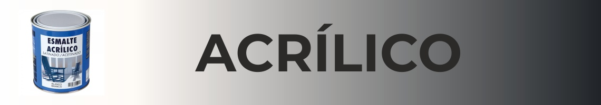
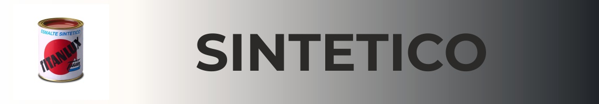
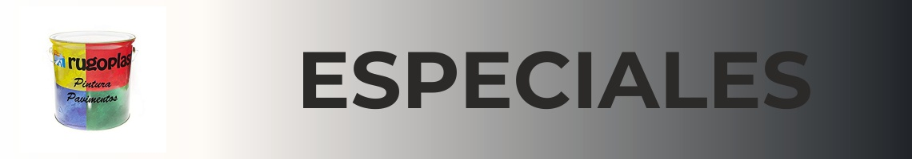
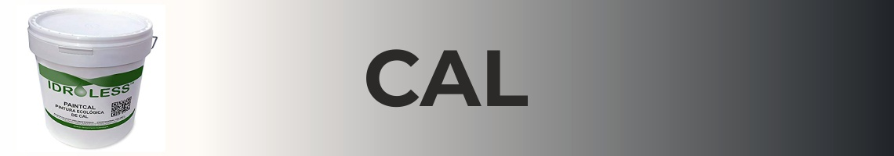
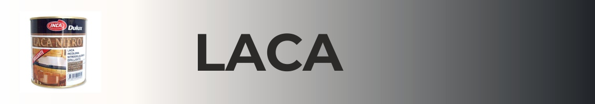
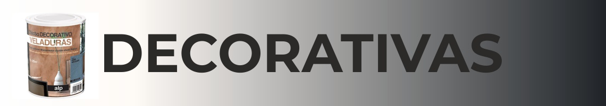
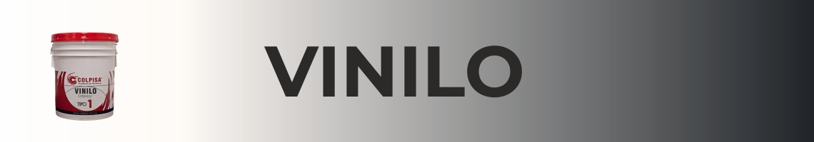

Tipos de pinturas y sus principales aplicaciones
Existen multitud de tipos de pintura ¿Cual es el correcto para mi caso?
En el mercado podemos encontrar decenas de productos y no siempre es facil distinguir cual es el optimo para nuestro trabajo. En primer lugar ¿Que nos podemos encontrar?
- Temple
- Pintura Plastica
- Esmalte
- Acrilico
- Sintetico
- Pintura al cemento
- Pintura a la cal
- Lacado
- Pinturas decorativas
- Vinilo
Temple
Es la pintura más extendida en la pintura de interiores. Muy económica es porosa y no permite su lavado lo que la hace débil al paso de tiempo, por ello solo se puede aplicar en interiores y presenta graves problemas contra la humedad.
Pintura plástica
Es la pintura más empleada en los entornos de una casa. Su principal ventaja es que puede ser limpiada de manchas lo que la hace ideal para todas las estancias a excepción de las húmedas.Al crear una capa impermeable (propiedad que permite que sea lavable) no permite pasar el vapor de agua, lo que genera las famosas ‘pompas’ en la superficie de la pintura. Para estas situaciones se emplea otro tipo de pinturas específicas para zonas húmedas (las cuales varían mucho en función del fabricante).
Sus principales materiales de aplicación son el yeso o el cemento .Para aplicarlo sobre otros materiales como madera o metal es necesario imprimar antes aunque sigue sin der todo adecuado ya que por norma general se dejan marcas dependiendo la herramienta con la que se aplique , provocando un acabado desigual en la superficie.

Esmalte acrílico
El acrílico es probablemente la más versátil de las pinturas, es válida tanto como para interior como para exterior. Acabado liso con posibilidad de mate, brilló o satinado. Ofrece resistencia al agua, es fácilmente lavable, buena resistencia al agua…Los únicos inconvenientes son su secado lento, que puede presentar problemas sobre todo a la hora de aplicarla en el exterior y la pérdida de brillo con el tiempo.

Esmalte sintético
La pintura que mejor conserva el brillo incluso en exteriores. Se puede encontrar con los tres tipos de acabados más comunes (brillo, satinado, maté). Su uso está generalizado en superficies de metal y madera tanto en exterior como en interior. A diferencia del acrílico sus tiempos de secado son menores.
Pintura Especiales (Cementos, pigmentos...)
Aquí nos podemos encontrar multitud de productos que varían enormemente del fabricante. Los más comunes son los que se aplican directamente sobre pavimentos (como el cemento) que suelen ser pigmentos que se deben mezclar con agua. Recientemente nos podemos encontrar en el mercado con nuevos productos que sustituyen a estos clásicos pigmentos.Estas nuevas pinturas para cemento presentan mucha más durabilidad respecto a sus antecesores, una de las principales debilidades de los pigmentos. En desventaja, su precio sigue siendo elevado respecto a las nuevas pinturas.

Cal
La cal se ha utilizado desde tiempos inmemoriales para la construcción en morteros, revestimientos y pinturas. Un material muy fiel y que es responsable de muchos icónicos paisajes de la orografía de nuestro país.¿Sus ventajas? Son totalmente ecológicas, presentan una enorme transpirabilidad lo que las hace muy adecuadas para climas cálidos, gran blancura…
El principal defecto es el por todos sabido, no son eternas. Requieren ser repintadas cada cierto tiempo para recuperar sus principales propiedades.

Lacado
El lacado de paredes es probablemente una de las técnicas más complicadas de aplicar. En Pinalta125 le dedicaremos un artículo más adelante en el que te enseñaremos paso a paso a aplicarlo correctamente.Requiere una preparación perfecta de la pared a aplicar pero crea acabados espectaculares.
Respecto a la pintura, se podría decir que es el barniz de interiores. Destaca principalmente en sus acabados complicados de obtener al ser aplicados sobre capas previas de pintura.

Decorativas
El estuco, una de nuestras especialidades se encontraría dentro de las pinturas decorativas.Existen multitud de opciones y posibilidades, consúltanos lo que tienes en mente y… ¡podremos asesorarte de cómo conseguirlo!

Vinilo y papel
¿Quieres dar un toque distinto a una pared? El vinilo y el papel ofrecen cantidad de patrones con exquisitos acabados, sus catálogos son tan amplios que es imposible no encontrar algo a tu gusto y adecuado para la situación.El vinilo y el papel varían su calidad principalmente por el gramaje, a mayor gramaje, mayor calidad del material y mejor acabado.
Tienen una durabilidad muy alta y dependiendo de la elección, pueden ser lavables sin ningún tipo de problema.
Si aún te queda alguna duda, ¡No dudes en preguntarnos!